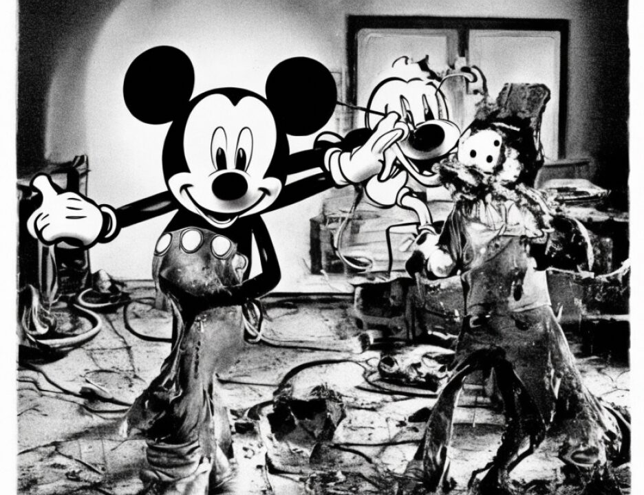

18 Q During the time that you were with al Qaeda in the Sudan,
19 did you have access, did you have control over money that
20 belonged to al Qaeda?
21 A Yes.
22 Q And during that time did you steal money from Usama Bin
23 Laden?
24 A Yes.
25 Q Can you tell the jury approximately in dollar figures the
383
1 amount of money you stole from Usama Bin Laden?
2 A It's around 100,000 or $10,000.
3 Q Sorry?
4 A $110,000.
5 Q Can you just briefly describe the method by which you
6 stole the money from Usama Bin Laden?
7 A How?
8 Q Yes.
9 A How?
10 Q Yes.
11 A At that time we buy some stuff come from outside and some
12 stuff we buy from other company in Sudan, like sugar, and we
13 sell it to local business companies. And I, because I know
14 everybody buy this stuff, he going to make a lot of money for
15 it and a lot of people, they ask to buy the stuff. And I say,
16 well, if I ask them for commission, we -- if the people buy
17 the supplies or the stuff, it means they give me commission.
18 And I have one cousin, and I told him that, and I
19 told him I can give you oil, a lot of oil, and I can give you
20 sugar and I can wait for you to pay easier. And he said, he
21 tell me that's good.
22 Q And did you actually then collect commissions?
2